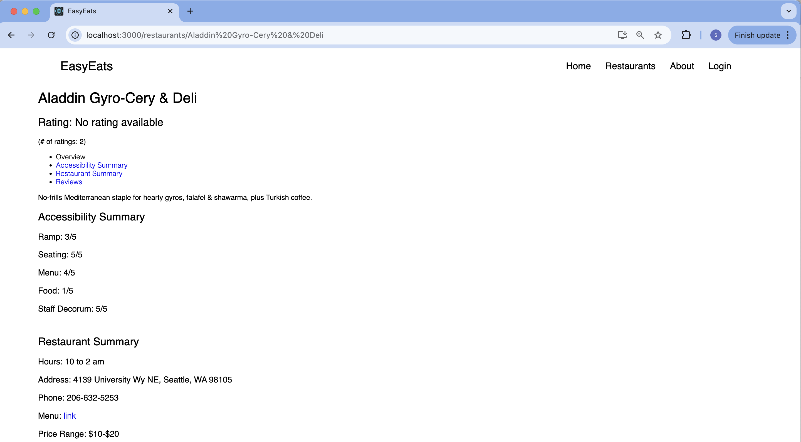
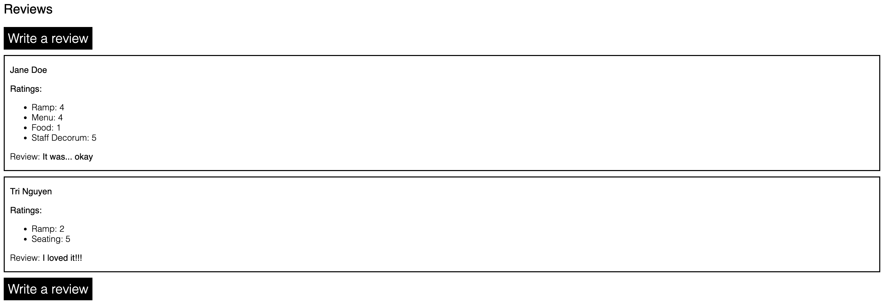

Important Links:
GitHub RepositoryAccessibility in restaurants is an ongoing issue for people with disabilities. Even though the Americans with Disabilities Act (ADA)
requires public spaces to be accessible, many restaurants do not follow these rules. This lack of accessibility makes something as simple as
going out to eat a challenge for millions of people. For example, many restaurants do not have ramps, making it impossible for people who use
wheelchairs to enter. Others have narrow doorways, crowded seating arrangements, or restrooms that are too small to accommodate mobility devices.
On top of that, staff in these establishments are often not trained to understand or meet the needs of customers with disabilities. These barriers
create frustration, isolation, and exclusion for individuals with disabilities.
Ace Ratcliff, who uses a wheelchair due to hypermobile Ehlers-Danlos Syndrome, shares their experiences in the article
“Dear Restaurants, Your Inaccessibility Is the Opposite of Hospitality."
Ratcliff explains how the lack of ramps, poor seating options, and unprepared staff make dining out nearly impossible. Despite their efforts to call
ahead and ask about accessibility, Ratcliff often finds
that restaurants fail to meet their needs. This has led to a loss of trust, with Ratcliff now expecting most restaurants not to accommodate them.
Ratcliff also highlights how accessibility issues show a bigger problem of neglect. They emphasize that designing restaurants to be accessible is
not just the right thing to do, but also good for business. Accessibility brings in more customers and creates a more welcoming environment for everyone.
Our project addresses these challenges by creating a restaurant accessibility rating platform. This platform will allow people to share their experiences,
rate restaurants on accessibility, and report issues. It will also let users search for restaurants based on the accessibility features they provide.
For example, someone looking for a restaurant with wheelchair-accessible seating can use the platform to find options near them. By making this information
available, the platform empowers people with disabilities to make informed choices and encourages restaurants to improve their accessibility. This is not
just about meeting legal requirements. It is about creating a system that values equity, inclusion, and respect for all.
The platform is inspired by popular review websites like help but on accessibility. Users will be able to leave detailed reviews about their experiences,
such as whether the restaurant had ramps, enough space for mobility devices, or accessible restrooms. They can also report specific problems, like a ramp
that is too steep or a bathroom door that is too narrow. The goal is to provide a clear and honest picture of how accessible a restaurant is.
This information will be useful not only for people with disabilities but also for their friends, families, and caregivers.
We made a conscious effort to ensure that the project actively challenges ableism rather than perpetuating it. Our platform centers the voices of people with disabilities, giving them a tool to advocate for better accessibility in restaurants. By prioritizing their experiences and creating a space where they can rate and review restaurants, we aim to empower users and challenge the systemic neglect of accessibility in public spaces. While we are confident in our anti-ableist approach, we remain committed to continuous improvement. We welcome feedback to ensure that no part of the platform unintentionally excludes any group within the disability community.
Accessibility was a top priority for both the platform and the tools used to develop it. EasyEats is built to have the feature of screen reader compatibility, high-contrast design,
and easy navigation to ensure it is accessible to people’s needs. The reviews and ratings system themselves are simplified to be clear and straightforward so users can quickly find the information they need.
Currently, the only way to access EasyEats is locally using the terminal, which makes it inaccessible to users at a large scale. We researched various hosting options to make our work
easily accessible to a wider audience, but ran into roadblocks due to the time constraint. In the future, we would love to find a hosting partner that meets our needs.
We designed Easy Eats to reflect the needs of people with disabilities by sourcing first-person accounts rather than conducting interviews. This decision was intentional to avoid adding additional burdens on disabled
individuals, respecting their time and energy. Stories like Ace Ratcliff’s “Dear Restaurants, Your Inaccessibility Is the Opposite of Hospitality” offered important perspectives on accessibility barriers in restaurants.
These accounts guided the platform’s design, ensuring it addressed real-world issues.
While we did not engage directly during the design phase, the platform is structured to continuously collect feedback from its users. By allowing people with disabilities to share their experiences through reviews and
ratings, the platform remains dynamic and responsive.
Empowering people with disabilities was the core mission of Easy Eats from the start. By having users rate, review, and report on mainly restaurant accessibility, we give them a powerful tool to advocate for change.
The platform also helps users make informed decisions about where to dine, reducing the stress and uncertainty often associated with navigating inaccessible spaces. This control fosters independence and agency, allowing
users to shape how restaurants approach accessibility.
We also designed the platform to celebrate and highlight positive examples of accessibility. Users can find restaurants that excel in creating inclusive environments, which not only benefits those businesses but also
provides models for other establishments to follow. In this way, the platform empowers both individuals and the broader community.
While EasyEats encourages feedback about accessibility features, we also provide general information about the restaurants such as price range, address, and contact information. This ensures that the information provided is relevant to all users. Intersectionality is also an important consideration. We address the principle of intersectionality by accommodating feedback from a whole range of users. By encapsulating diverse accessibility needs, whether related to mobility, sensory experience, or communication barriers, it creates a resource that is comprehensive, equitable, and capable of driving systematic change. This is reflected by the categories of reviews we have. For example, “Ramps” category for people who use wheelchairs or “Service Dog” category to see if an establishment acknowledges these things. Additionally, the design aims to be inclusive and adaptable, evolving based on ongoing community input to remain relevant and heard.
ALT Text: A screenshot of a website titled EasyEats with navigation links in the top right corner named Home, Restaurants, About, and Login, with Restaurants an active link. The page is titled “Restaurants near UW” and lists 6 restaurant links.
ALT Text: A screenshot of EasyEats website with a page titled “Aladdin Gyro-Cery & Deli”. It lists its accessibility ratings in the following categories: Ramp, Seating, Menu, Food, and Staff Decorum. It also includes restaurant summary with information related to hours, location, phone number, menu, and price rang.
ALT Text: A screenshot of the review section for the same page as above. It has two reviews written by Jane Doe and Tri Nguyen with their respective ratings. There are two “Write a review” buttons, one before the first review and one after the last review.
At the heart of the project is the principle of ensuring that those most impacted by accessibility barriers are leading the conversation. While we intentionally avoided direct interviews to prevent burdening individuals, the platform relies heavily on first-person accounts and publicly shared stories to guide its design. This approach ensures that the voices of people with disabilities shape the project without imposing on their time or energy. Furthermore, Easy Eats is built to evolve through ongoing feedback from users, ensuring that the platform remains responsive to their needs. By giving users the ability to directly influence the platform’s content through their reviews and ratings, we empower people with disabilities to lead the way in advocating for change in the restaurant industry.
Easy Eats fosters cross-disability solidarity by creating a platform where users with different disabilities can share their experiences and advocate for inclusive spaces together. For instance, a user with mobility challenges might review a restaurant’s accessible seating, while another with sensory sensitivities could provide insights on noise levels and lighting. This shared space for feedback ensures that restaurants are held accountable for addressing a wide range of accessibility needs, not just a single category. By highlighting the experiences of users with varying disabilities, the platform encourages a collective effort to improve accessibility standards across the board. This solidarity helps strengthen the disability community’s voice and push for broader systemic change in how restaurants approach inclusion.
Easy Eats embraces intersectionality by recognizing that people with disabilities are not a homogenous group. The platform considers how various factors, such as race, gender, socioeconomic status, and type of disability, intersect to create unique accessibility needs. For instance, a wheelchair user may have mobility-related concerns, while someone with sensory sensitivities might prioritize quiet, low-stimulation environments. The platform’s filtering options allow users to tailor searches based on specific accessibility features like ramps, braille menus, or sensory-friendly layouts, ensuring it serves a diverse audience. Additionally, by addressing affordability and geographic reach, Easy Eats acknowledges the financial and locational barriers that disproportionately impact disabled individuals from marginalized communities. This inclusive approach reflects the principle of addressing the whole person and their intersecting identities.
One of the most significant insights we gained through developing Easy Eats and this class in general is how often accessibility needs are overlooked in public spaces like restaurants. Despite laws like the Americans with Disabilities Act (ADA), many businesses treat accessibility as an
afterthought or fail to meet even basic standards. We learned that these oversights extend beyond physical barriers like missing ramps or narrow restrooms, they include a lack of sensory accommodations, untrained staff, and inaccessible communication tools like menus without braille or
digital formats. This reinforces the systemic neglect faced by people with disabilities, making it clear that advocacy and education are needed to shift accessibility from a compliance checkbox to a core part of business practices.
Looking forward, Easy Eats can build on these learnings by expanding its scope and influence. Future work could include outreach programs to educate restaurant owners on the importance of accessibility and provide them with actionable steps to improve. Collaborating with advocacy groups can
amplify the voices of those who face accessibility barriers daily, ensuring their experiences guide these efforts. Additionally, expanding the platform to track and analyze accessibility trends across industries could help identify broader patterns of neglect and inspire systemic change.